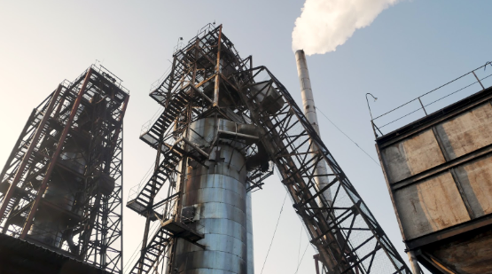

Екологи спростовують забруднення стічних вод та повітря ТДВ “Перечинським лісохімічним комбінатом”
На численні прохання Перечинської громади, 6 грудня 2019 року в місто була запрошена незалежна лабораторія ПНВП “Екологія”. Нею було проведено відбори проб повітря для визначення концентрації забруднюючих речовин в приземному шарі атмосферного повітря у 5-ти точках м. Перечин по санітарно-захисній зоні лісохімічного комбінату.
Також для більш детального дослідження проби були взяті у школі та на площі Народній. Лабораторією була перевірена наявність в атмосфері наступних речовин: діоксин азоту, оксид вуглецю, кислота оцтова, фенол, формальдегід тощо.
Висновки однозначні – перевищення норм гранично допустимих концентрацій у жодній точці не виявлено.
Екологи наголошують, що існує можливість самостійної перевірки стану повітря та закликають усіх свідомих громадян проводити контроль рівня викидів шкідливих речовин у річку з відкритих офіційних незалежних джерел і перевіряти інформацію від Державного агенства водних ресурсів України (http://monitoring.davr.gov.ua/).
Для перевірки якості води існує проект “Чиста вода” (http://texty.org.ua/water/), який реалізується та фінансується за підтримки незалежного агентства федерального уряду США (https://www.usaid.gov/), неприбуткової організації “Eurasia Foundation” (https://www.eurasia.org/).
Для моніторингу та аналізу стану повітря можна використовувати відкрите джерело інформації SaveEcoBot (це безкоштовний сервіс для громадськості, розроблений групою активістів Save Dnipro) (https://www.saveecobot.com/).